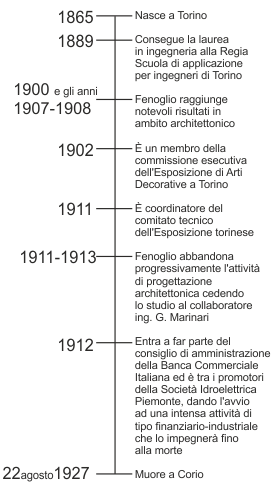

Biografia
Pietro Fenoglio nasce a Torino nel 1865, da una famiglia di ingegneri e architetti operanti in Torino in cui si segnalano un Fenoglio artefice di case di civile abitazione.
L'attivita professionale di Pietro Fenoglio prende avvio negli ultimi anni del secolo XIX secolo, dopo un breve tirocinio seguito alla laurea in ingegneria civile conseguita presso la Regia Scuola di Applicazione per gli ingegneri di Torino nel 1886.
Viene ricordato come uno dei personaggi di spicco dell'architettura art nouveau italiana, grazie soprattutto agli scritti di alcuni storici, tra i quali Rossana Bossaglia che, a partire dagli anni Sessanta del Novecento, hanno studiato e rivalutato tale movimento artistico. In realta, questi lusinghieri giudizi critici mettono in luce soltanto l'aspetto piu modaiolo della personalita di Fenoglio, certamente una delle figure piu complesse nel mondo culturale torinese dell'epoca. Una complessita che deriva innanzitutto dalla vastita del catalogo delle opere, ma anche dalla varieta ed ampiezza dei riferimenti stilistici adottati nel corso degli anni, nonche dalla repentina scelta di abbandonare l'attivita di ingegnere tra il 1912 e il 1913. Alcuni ravvisano nella sua scelta il calcolo economico di un professionista di successo, conscio delle proprio capacita di uomo d'affari e disposto a rimettersi in gioco come banchiere e finanziere.
Proprio nel 1912 fonda, con Besozzi e Ponti, la Societa Idroelettrica Piemonte ed entra a fare parte del consiglio di amministrazione della Banca Commerciale Italiana, unico italiano con Otto Joel, Federico Weil e Toeplitz.
Nel 1920 e nominato vicepresidente della Banca e suo rappresentante a Roma. In questo contesto (1915-1922) ostacola il progetto di Luca Beltrami e dell'ingegner Casati, favorendo Marcello Piacentini quale direttore dei lavori per la nuova sede di Roma, consentendo l'adozione di un nuovo progetto di quest'ultimo. Beltrami, per contrastare l'operazione, avrebbe potuto far leva sulla posizione non limpida di Fenoglio, che risulta coinvolto in un processo detto “La scalata delle banche”, ma proprio per questo motivo non intende approfittare della situazione.
Si vedra come dal corpus delle opere, realizzate nell'arco di 25 anni, emerge un professionista di brillante talento inventivo e di grande perizia accademica, raffinato interprete delle piu aggiornate tendenze stilistiche dell'architettura italiana ed europea, ben introdotto negli ambienti elitari dell'alta borghesia. Secondo alcuni, l'adesione ai canoni dell'art nouveau si inserisce in questo personale modo di intendere la professione di architetto, che appare caratterizzata da connotazioni commerciali ed imprenditoriali, piuttosto che da una convinzione filosofica ed estetica.
Allo stesso modo, appare parziale e riduttiva la chiave di lettura proposta da taluni storici, che riassumono la carriera di progettista in un periodo di modernita art nouveau seguito da una crisi inventiva sfociata nel ritorno all'Eclettismo novecentesco dove utilizza contemporaneamente modi neogotici, storicisti e neobarocchi. E quindi un personaggio spregiudicato, molto attento alle diverse inclinazioni della committenza.
Carrol W. Meeks ha rilevato dieci varianti nell'architettura dell'epoca: spesso queste di alternano nelle sue opere, cosi come in parte avviene in Fenoglio. L'eterogeneita e ravvisabile nella sua opera soprattutto per la grande varieta di tipologie che l'ingegnere affronta nella sua progettazione. Aderisce ai diversi bisogni di una societa in crescita.
Dal suo studio escono disegni di industrie, case popolari, villaggi operai, ville e palazzine, case da prigione, padiglioni effimeri, ristoranti, ospedali, complessi assistenziali, garages.
Anche nel contesto torinese dell'epoca Pietro Fenoglio si discosta dall'opera degli architetti suoi contemporanei.
Viene eletto membro della commissione esecutiva dell'Esposizione di Arti Decorative del 1902 a Torino, vinta da D'Aronco che, non potendo fisicamente presiedere i lavori, organizza un ufficio tecnico affidando a Fenoglio la parte amministrativa, il quale, dopo un primo consenso, rifiuta il posto offertogli per motivi di salute (ancora oggi non si conosce l'effettiva causa del suo rifiuto).
Nel 1905 compare tra i fondatori della rivista L'architettura italiana, della quale non si avvale per diffondere le sue opere.
Fenoglio orienta il suo stile verso il Liberty, realizzando numerosi interventi edilizi di carattere residenziale tra i quali si ricordano, Villa Scott in corso Giovanni Lanza (1902), la casa Fenoglio-La Fleur, luogo simbolico del liberty cittadino, in via Principi d'Acaia 11 (1902), le case della Societa Torinese Abitazioni Popolari di via Marco Polo (1903) e di via Revello (1909) e il Villaggio Leumann (1903) a Collegno.
La sua attivita di progettista abbraccia anche il campo dell'architettura industriale: la Conceria Fiorio (1900), il Birrificio Metzger (1903), la Manifattura Gilardini (1904), la Fabbrica Itala (1905), le Concerie Italiane Riunite (1906), la Fonderia e Smalteria Ballada (1906) e la Venchi Unica (1907) sono solo alcuni dei numerosi interventi realizzati sul territorio cittadino.
La scelta di abbandonare la professione e di poco seguente al grande successo colto all'Esposizione torinese del 1911 per la quale ricopre il ruolo di coordinatore del comitato tecnico. Un ulteriore aspetto alquanto difficile da valutare e l'apporto progettuale dei diversi ingegneri e architetti che collaborano con Fenoglio. Certamente anche a quell'epoca, nei principali studi di architettura, i titolari sono soliti avvalersi dell'ausilio dei un certo numero di collaboratori, ma nel caso di Fenoglio tale circostanza appare particolarmente rilevante per il numero imponente di progetti presentati ai competenti uffici edilizi comunali.
Appare accertata la collaborazione dei primissimi anni del Novecento di Gottardo Gussoni (1869-1951),un personaggio che la lasciato tracce di se fra la numerosa serie di architetti torinesi esponenti dell'eclettismo e del liberty. Scompare invece nell'anonimato il ricordo degli altri collaboratori, compreso l'ingegner Giulio Marinari, che nel 1912, quando Fenoglio abbandona la professione di architetto, subentra come titolare dello studio, rilevandone la clientela. Tale circostanza appare un indizio della posizione alquanto subordinata e meramente esecutiva dei collaboratori dello studio, a proposito dei quali, con l'eccezione del citato Gussoni, vi e da pensare che non spiccassero per un particolare talento inventivo.
Pietro Fenoglio muore a Corio Canavese, nella sua casa, il 22 agosto 1927.